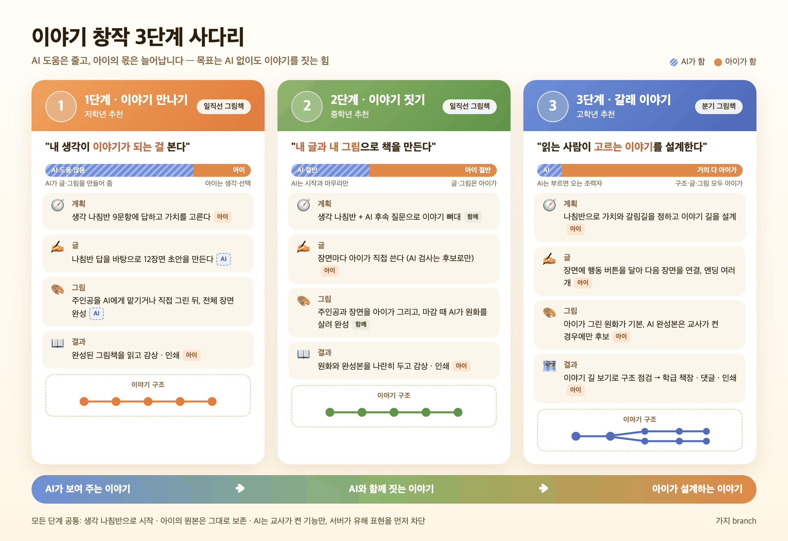

제20회 디지털교육연구대회 출품작
🎭 심사위원 체험
모둠을 하나 골라 누르면 로그인 없이 바로 들어갑니다. 이미 만들어진 계정(심사1~15)을 그대로 씁니다.
심사반(코드 9999)을 맡은 교사 계정으로 열립니다. 학생 화면(체험 모둠)에서 만든 작품이 교사 화면에 어떻게 보이는지 함께 보시면 좋습니다.
모둠 카드 15개를 한눈에 — 미시작/작업 중/감상 가능/확인 필요 상태, 단계·유형 필터. 카드마다 수정(학생 화면으로 들어가기)·감상·공개/비공개·감상 링크 복사·PIN 바꾸기·잠금·나침반 답 보기·처음부터 다시.
학급의 AI 기능을 항목별로 켜고 끕니다 — 이야기 초안, 글 다듬기, AI 그림책 마감, 작품 점검, 쓰기 후 질문. 팀별 사용 횟수, 모둠 계정 만들기(CSV 일괄), 책장 공개, 댓글 코드, 입장 잠금.
교사용·학생용 사용 설명서(1·2·3단계 분리), 생각 나침반 활동지·고쳐쓰기 활동지·그림책(A4 가로) 인쇄, 가정 배부용 동의서(개인정보 수집·이용 및 생성형 AI 활용). 인쇄 도우미로 글자 위치 조정.
무비형 수업용 — 주제와 장면 수를 정하면 AI가 촬영용 대본 구조를 만들고, 학급별로 누적 저장해 다시 꺼내 씁니다. 대본 그대로 작품 뼈대를 생성할 수 있어요.
아래 버튼을 누르면 로그인 없이 교사 화면이 열립니다. 심사반의 실제 데이터라 설정을 바꾸면 체험 모둠에 바로 반영돼요.
비어 있음 모둠에서 새로 시작하고, 진행 중·완성 모둠은 눌러서 이어서 보거나 다듬어 볼 수 있어요.

모둠에 들어가면 먼저 단계를 고르는 화면이 나옵니다. 한 모둠에는 한 작품(한 단계)만 담기니, 다른 단계를 보려면 다른 모둠을 고르세요. 배지는 실시간 상태예요 — 진행 중인 모둠은 그 심사위원이 이어서 쓰는 중일 수 있어요.